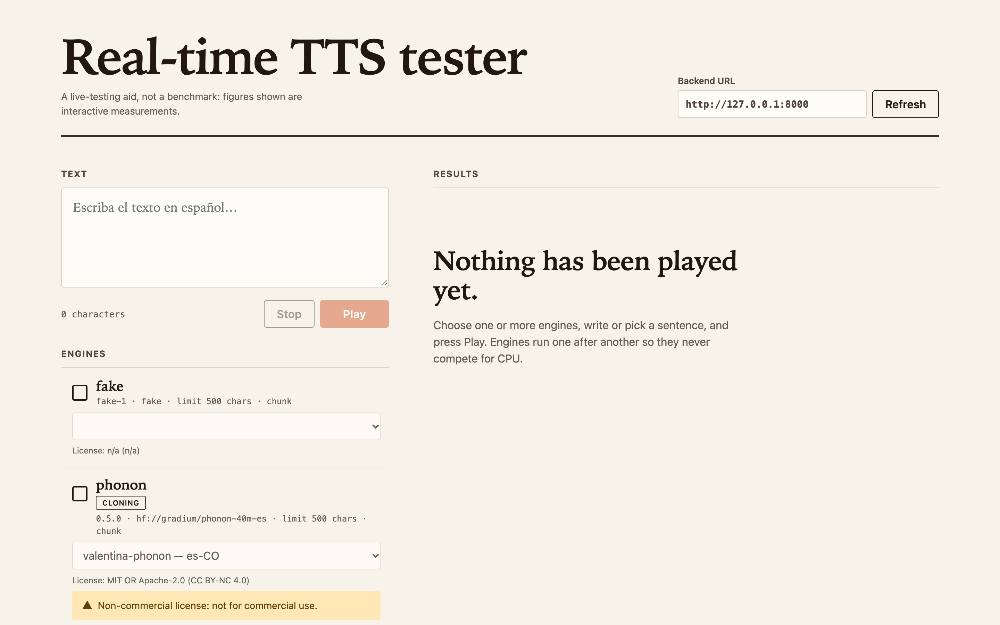
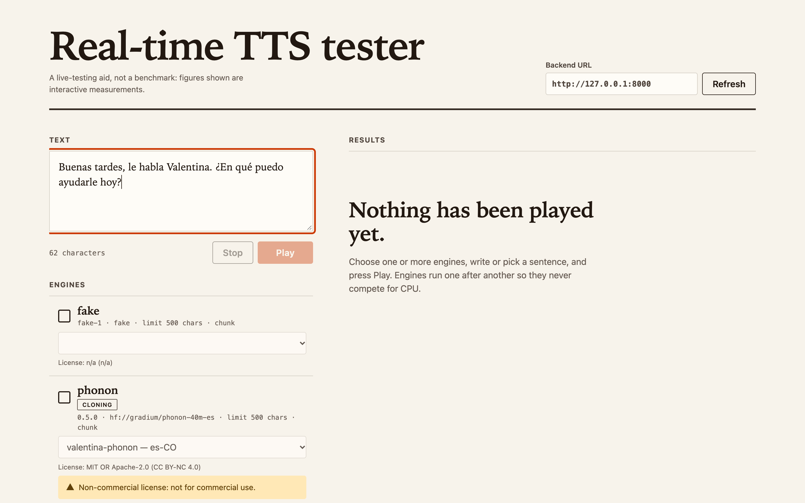
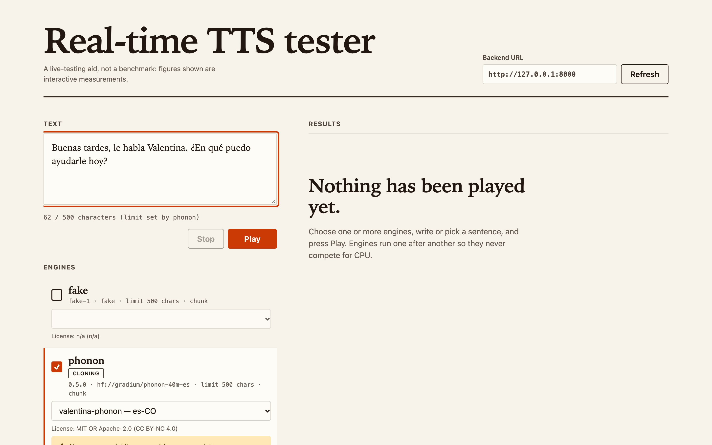
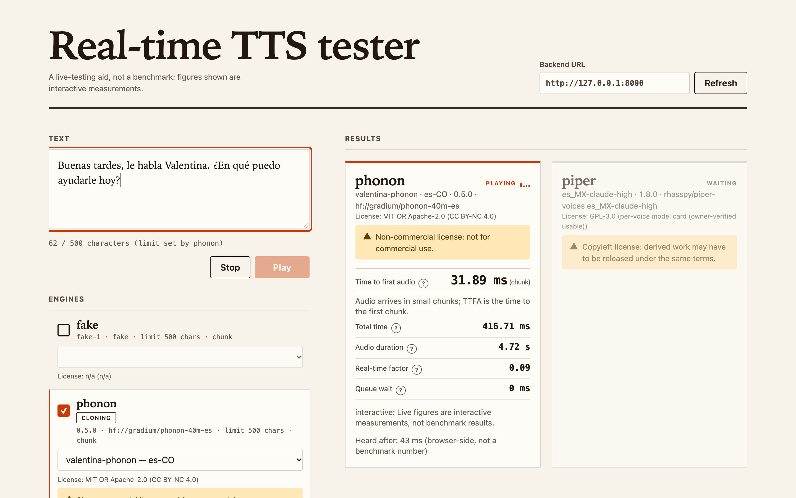
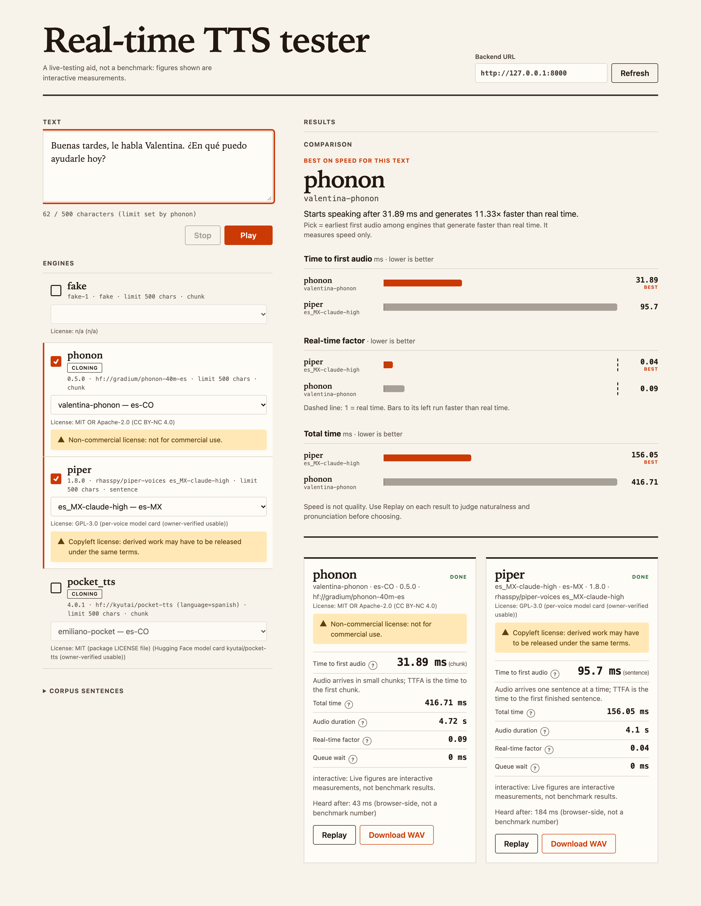

Real-time TTS tester
Pruébalo tú.
phonon · valentina-phonon — es-CO
Escribe una frase en español
Phonon · Piper · Pocket TTS
Primer audio en
31.89 ms
·
11.33×
tiempo real
valentina-phonon —
es-CO